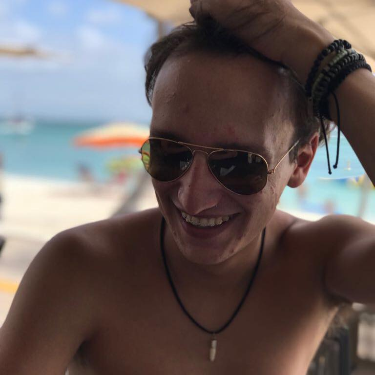

As you may know, my name is Lucas Brancato, and I am from Brazil! I was born in November 11 1997, in Sao Paulo (one of the biggest cities in the whloe America). I came to USA about one year ago, because my mom was transfer by work, and she offered to me to come with her, so I could apply to a USA college; and I did! I got accepted at Illinois Institute of Technology.
I have a big family. My mom and dad are separeted, and they now are married with different people. So now I have a mom, a dad, a stepmom, and a stepdad. But the crazy thing is that my stepmom and stepdad have two kid of themselvs! To women from my stepdad, and two men from my stepmom. Also, I could not forget about my little sister! She lives with my mom and stepdad in Pittsburgh (Pensilvania), and she is in High School. I miss her the most because we have really good time together!
The final and the most important thing about me is: I LOVE DOGS SO MUCH!!! Seriously, I have my dogs planned in my mind! I just need the money... and the space. =) 